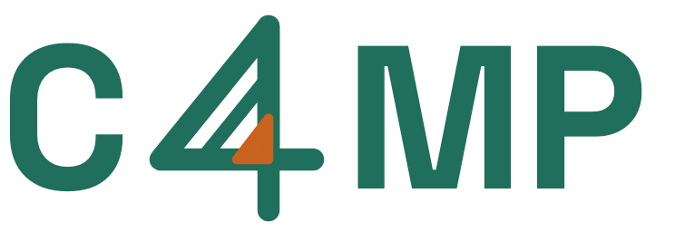
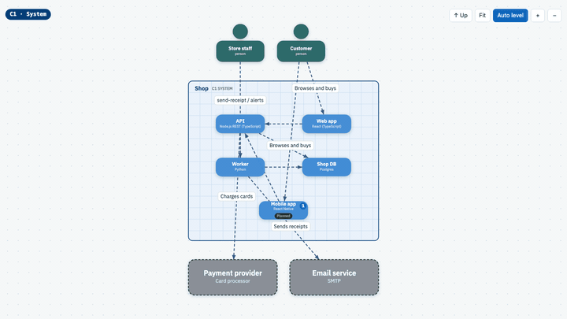

C4MP: your crew, your map, your plan, in one camp.
A zoomable map of your code that tracks how it drifts from your plan, with a board, simulations and views for architecture, input/output and storage.
The demo is a made-up online shop, running in your browser with no install.

Install
With Homebrew:
brew install tgsoon2002/c4mp/c4mpOr with the install script:
curl -fsSL https://github.com/tgsoon2002/c4mp-releases/releases/latest/download/install.sh | sh